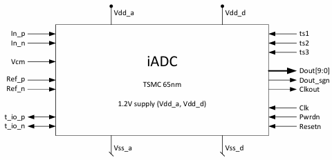

Designed and implemented a 11-bit Dual Slop Analog-to-Digital Converter (ADC) in TSMC 65nm CMOS technology.
Design blocks: Bias generator, Operational amplifier, Comparator, Transfer gates, R/C to form an integrator, digital control logic, testing, top-level integration.
- Full-custom and semi-custom implementation
- Fully implemented and verified for tape-out
- Silicon finally characterised in lab

11 bit Dual-slope ADC Pin Diagram
Specifications
- Supply voltage: 1.2V
- Input dynamic range (single ended) on Vip or Vin: 0.5V … 1V
- Technology: TSMC CMOS 65nm
- Reference voltages: 0.5V and 1V
- Common mode voltage: 0.75V
- System clock: 50 MHz
- Resolution: 10bit + sign
Implementation Highlights
- Biasing and analog frontend designed from scratch
- Fully integrated digital control logic
- Top-level testbench and lab verification
- Final silicon behavior matched simulations